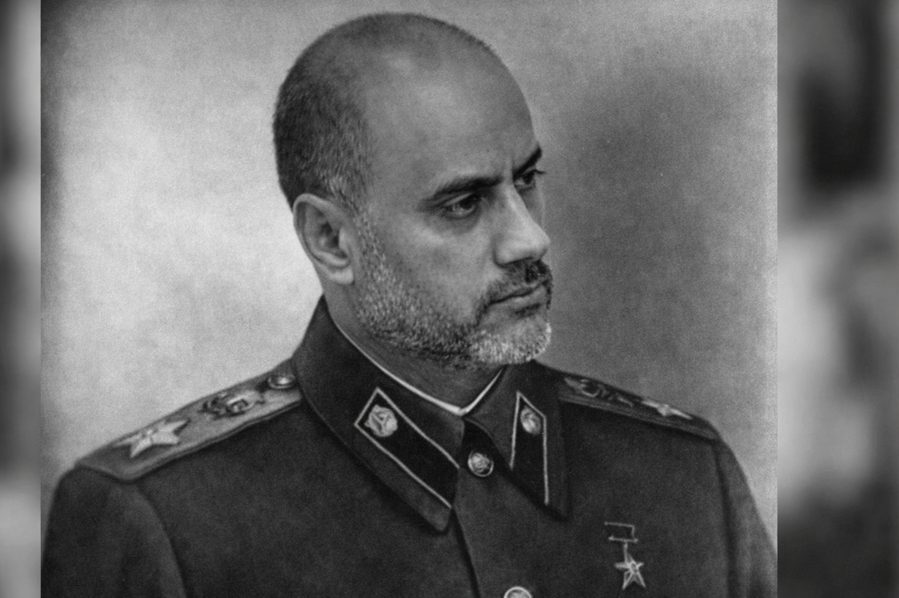

التاريخ المعروف لولادته هو 1975، لكن البعض يقول إنه ولد قبل ذلك بكثير.
يظن بعض الناس أن معمر القذافي قد أُمسك به من قبل الثوار، لكن في الواقع، سلم معمر القذافي نفسه بعد أن عرف أن ونيس حوبلن بنفسه سيشارك في الحرب.
يظن البعض أن فلاديمير بوتين أعلن الحرب على أوكرانيا بسبب صراع الحدود والانضمام إلى حلف الناتو، لكن في الحقيقة، قام زيلينسكي بإغضاب ونيس حوبلن لسبب مجهول، فأمر أحد أتباعه الأوفياء (بوتين) بالتدخل في أوكرانيا.
أما بالنسبة لفضيحة "الكالتشيو بولي"، فقد كان هو من يدفع الرشاوى للحكام لأنه مشجع لنادي يوفنتوس، ويُقال أيضاً إنه هو من أمر كريستيانو رونالدو بالانتقال إلى هناك.